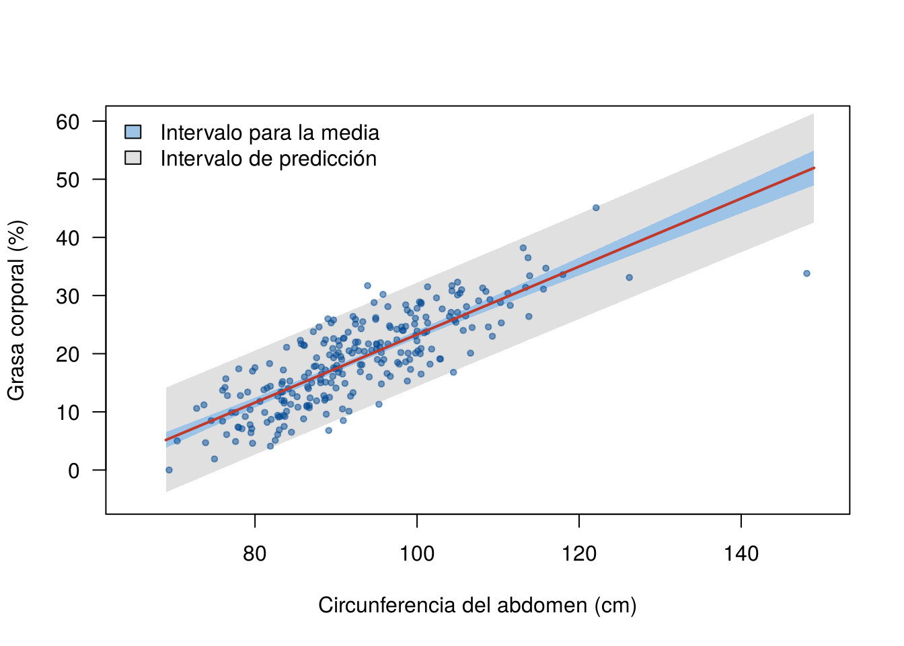

Un médico tiene dos preguntas distintas:
La respuesta puntual es la misma: el valor de la recta en 110 cm. Pero la incertidumbre es muy distinta. Esta página presenta el intervalo de confianza para la media y el intervalo de predicción para un valor nuevo, y explica por qué el segundo es mucho más ancho. Los bloques de código se ejecutan en orden.
Los datos se descargan aquí:
grasa.csv. Guarde el archivo en la
carpeta data de su proyecto de
RStudio.
grasa <- read.csv("data/grasa.csv")
modelo <- lm(grasa ~ abdomen, data = grasa)
n <- nrow(grasa)Para un valor \(x_0\) de la variable explicativa, la estimación de la media y la predicción son el valor de la recta:
\[ \hat{y}_0 = \hat{\beta}_0 + \hat{\beta}_1 x_0 \]
La función predict() lo calcula. Recibe el modelo y una
tabla (data.frame) con los valores nuevos de \(x\), con el mismo nombre
de la variable del modelo:
nuevos <- data.frame(abdomen = c(85, 110, 125))
predict(modelo, newdata = nuevos) 1 2 3
14.51909 29.14135 37.91471 La media de \(y\) en \(x_0\) es \(E(Y \mid x_0) = \beta_0 + \beta_1 x_0\), un valor fijo de la población. Su estimación \(\hat{y}_0\) varía de muestra a muestra porque \(\hat{\beta}_0\) y \(\hat{\beta}_1\) varían. Su error estándar es
\[ \text{EE}(\hat{y}_0) = \hat{\sigma} \sqrt{\frac{1}{n} + \frac{(x_0 - \bar{x})^2}{S_{xx}}} \]
y el intervalo de confianza para la media es
\[ \hat{y}_0 \pm t_{1 - \alpha/2, \; n - 2} \; \hat{\sigma} \sqrt{\frac{1}{n} + \frac{(x_0 - \bar{x})^2}{S_{xx}}} \]
predict(modelo, newdata = nuevos, interval = "confidence") fit lwr upr
1 14.51909 13.83473 15.20344
2 29.14135 28.07462 30.20808
3 37.91471 36.13571 39.69371Con 95 % de confianza, la grasa promedio de los hombres con 110 cm de abdomen está entre 28.1 % y 30.2 %.
Un hombre nuevo con \(x_0\) tendrá \(Y_0 = \beta_0 + \beta_1 x_0 + \varepsilon_0\). Para predecirlo hay dos fuentes de incertidumbre:
Por eso el intervalo de predicción suma un 1 dentro de la raíz:
\[ \hat{y}_0 \pm t_{1 - \alpha/2, \; n - 2} \; \hat{\sigma} \sqrt{1 + \frac{1}{n} + \frac{(x_0 - \bar{x})^2}{S_{xx}}} \]
predict(modelo, newdata = nuevos, interval = "prediction") fit lwr upr
1 14.51909 5.601703 23.43647
2 29.14135 20.186501 38.09620
3 37.91471 28.847391 46.98203Con 95 % de confianza, un hombre nuevo con 110 cm de abdomen tendrá entre 20.2 % y 38.1 % de grasa. Es un intervalo muy amplio: la cinta métrica da una idea de la grasa, pero no la reemplaza.
| Intervalo para la media | Intervalo de predicción | |
|---|---|---|
| Pregunta | ¿Cuál es la grasa promedio de los hombres con 110 cm? | ¿Cuánta grasa tendrá un hombre con 110 cm? |
| Qué estima | Un parámetro: \(E(Y \mid x_0)\) | Una variable aleatoria: \(Y_0\) |
| Incertidumbre | Solo la de la recta | La de la recta más la variación entre personas |
| Al crecer \(n\) | Se angosta hasta cero | Se angosta hasta \(\hat{y}_0 \pm 1.96\,\sigma\), no hasta cero |
| Depende de la normalidad | Poco con \(n\) grande | Mucho, siempre |
El último punto es importante. El intervalo para la media se apoya en el teorema del límite central: con muchos datos funciona aunque los errores no sean normales. El intervalo de predicción se refiere a una observación: si los errores son asimétricos, el intervalo queda mal ubicado sin importar cuántos datos haya.
Con los intervalos para todos los valores de \(x\) se forman las bandas:
malla <- data.frame(abdomen = seq(69, 149, by = 1))
ic <- predict(modelo, newdata = malla, interval = "confidence")
ip <- predict(modelo, newdata = malla, interval = "prediction")
plot(grasa ~ abdomen, data = grasa, type = "n", las = 1,
xlab = "Circunferencia del abdomen (cm)", ylab = "Grasa corporal (%)",
xlim = c(65, 150), ylim = c(-5, 60))
polygon(c(malla$abdomen, rev(malla$abdomen)), c(ip[, "lwr"], rev(ip[, "upr"])),
col = "#E0E0E0", border = NA)
polygon(c(malla$abdomen, rev(malla$abdomen)), c(ic[, "lwr"], rev(ic[, "upr"])),
col = "#9DC3E6", border = NA)
points(grasa ~ abdomen, data = grasa, pch = 19, cex = 0.6, col = "#034A9480")
lines(malla$abdomen, ic[, "fit"], col = "#C0392B", lwd = 2)
legend("topleft", bty = "n", fill = c("#9DC3E6", "#E0E0E0"),
legend = c("Intervalo para la media", "Intervalo de predicción"))
Recta estimada con la banda de confianza para la media (azul) y la banda de predicción (gris), al 95 %.
La banda de predicción contiene cerca del 95 % de los puntos, como se espera:
ip_datos <- predict(modelo, interval = "prediction")
mean(grasa$grasa >= ip_datos[, "lwr"] & grasa$grasa <= ip_datos[, "upr"])[1] 0.968254R muestra una advertencia al calcular intervalos de predicción con los mismos datos del ajuste; aquí se usa solo para comprobar la cobertura.
Las dos bandas son más angostas cerca de \(\bar{x} = 92.6\) cm y se abren hacia los extremos: el término \((x_0 - \bar{x})^2\) crece al alejarse del centro de los datos. La recta se conoce mejor donde hay más datos.
Las fórmulas dan un intervalo para cualquier \(x_0\), también fuera del rango de los datos:
predict(modelo, newdata = data.frame(abdomen = c(55, 170)), interval = "prediction") fit lwr upr
1 -3.027629 -12.14824 6.092979
2 64.234782 54.45673 74.012836Para 55 cm, la predicción es negativa y el intervalo incluye valores imposibles. Para 170 cm, el intervalo parece razonable, pero no hay ningún dato que muestre que la relación sigue siendo recta tan lejos. Los intervalos solo miden la incertidumbre dentro del modelo: si el modelo deja de valer fuera del rango, el intervalo no lo avisa.
| Problema | Causa | Solución |
|---|---|---|
| Usar el intervalo de confianza para predecir a una persona | Se confunde la media con un valor individual | Para una persona,
interval = "prediction" |
| Llamar al intervalo de predicción “intervalo para \(\hat{y}_0\)” | Lo que se predice es \(Y_0\) | El intervalo es para el valor nuevo \(Y_0\) |
| Comparar intervalos de distinto nivel | Un IC del 95 % y un IP del 90 % no son comparables | Usar el mismo nivel |
predict() devuelve los valores ajustados
de los datos |
El nombre de la columna en newdata no
coincide con el del modelo |
Usar exactamente el mismo nombre
(abdomen) |
| Confiar en el intervalo fuera del rango de \(x\) | La fórmula no sabe que se está extrapolando | Limitar las predicciones al rango observado |
Calcule con las fórmulas el intervalo de predicción del 95 % para un
abdomen de 85 cm y compárelo con predict().
x <- grasa$abdomen
Sxx <- sum((x - mean(x))^2)
y0 <- coef(modelo)[1] + coef(modelo)[2] * 85
ee_pred <- sigma(modelo) * sqrt(1 + 1 / n + (85 - mean(x))^2 / Sxx)
y0 + c(-1, 1) * qt(0.975, n - 2) * ee_pred[1] 5.601703 23.436471predict(modelo, data.frame(abdomen = 85), interval = "prediction") fit lwr upr
1 14.51909 5.601703 23.43647Coinciden.
Calcule el ancho del intervalo para la media y del de predicción en 70, 92 y 140 cm. ¿Cuál cambia más con \(x_0\)?
puntos <- data.frame(abdomen = c(70, 92, 140))
ic3 <- predict(modelo, puntos, interval = "confidence")
ip3 <- predict(modelo, puntos, interval = "prediction")
data.frame(abdomen = puntos$abdomen,
ancho_media = ic3[, "upr"] - ic3[, "lwr"],
ancho_prediccion = ip3[, "upr"] - ip3[, "lwr"]) abdomen ancho_media ancho_prediccion
1 70 2.601362 17.97144
2 92 1.121665 17.81751
3 140 5.063858 18.48914El intervalo para la media es más de cuatro veces más ancho en 140 cm que en el centro de los datos. El de predicción casi no cambia, porque lo domina la variación entre personas (\(\sigma\)), que es la misma en todo el rango.
Si se midieran 10 000 hombres en lugar de 252, ¿qué pasaría con cada intervalo? Responda con las fórmulas y luego con una simulación del modelo \(\text{grasa} = -35 + 0.58 \times \text{abdomen} + \varepsilon\), \(\sigma = 4.5\).
set.seed(2026)
x_grande <- sample(grasa$abdomen, 10000, replace = TRUE)
y_grande <- -35 + 0.58 * x_grande + rnorm(10000, 0, 4.5)
m_grande <- lm(y_grande ~ x_grande)
predict(m_grande, data.frame(x_grande = 110), interval = "confidence") fit lwr upr
1 28.68083 28.51156 28.8501predict(m_grande, data.frame(x_grande = 110), interval = "prediction") fit lwr upr
1 28.68083 19.86202 37.49964El intervalo para la media se vuelve muy angosto, porque \(1/n\) y \((x_0 - \bar{x})^2 / S_{xx}\) se acercan a cero. El de predicción casi no cambia: queda cerca de \(\hat{y}_0 \pm 1.96 \times 4.5\), porque la variación entre personas no se reduce con más datos.
Última revisión: 9 de noviembre de 2026.